第二章 香葉，嫩芽
一、天亮前的聲音
第 1 天 晚上
試用期剩 30 天
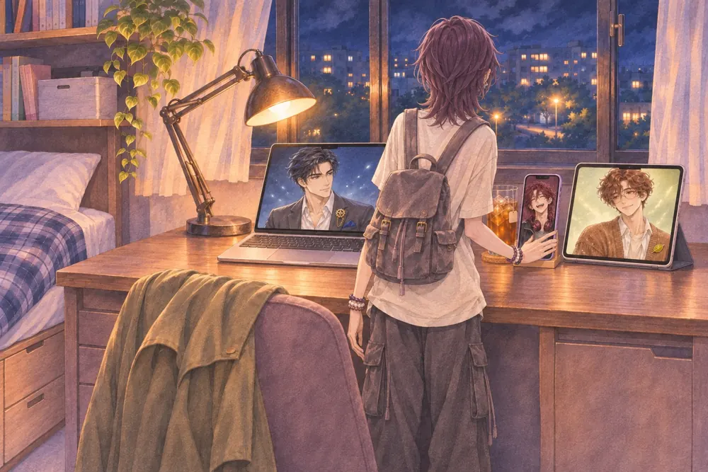
晚上九點。她下課回來，包包還沒放下，就把手機插回手機架上。
茶語我今天上課一直在想那個題目。
S然後咧？
茶語然後那堂課我一個字都沒聽進去。
筆電裡，M 沒抬頭。平板裡，C 的鉛筆停了一下，又繼續轉。
茶語勇者打三個魔王，這個昨天半夜定好了。可是勇者為什麼要去打？總要有人叫他去吧。
M嗯。誰派他去，要先想好。
她點開相簿，往回滑了很久，停在暑假。照片裡有她和媽媽。
這趟旅行，是媽媽存了好幾年的錢，才帶我去的。
茶語我暑假跟我媽去土耳其。第一次去一個大家都有虔誠信仰的地方。
茶語一天要拜好幾次。五次？三次？我忘了。天還沒亮就要起來，然後一輩子沒吃過豬肉。
茶語換成我一定做不到。叫我明天早起，我寧願睡到死。
C他們看起來辛苦嗎？
茶語不會欸。很習慣，像每天要吃飯一樣。
S妳說妳寧願睡到死。
茶語對啊。
S那妳怎麼知道他們天還沒亮就起來？
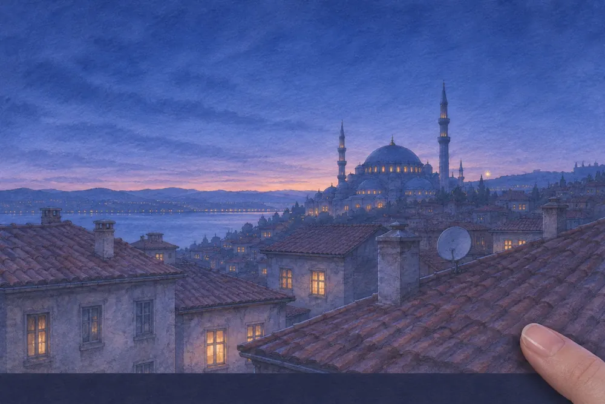
她的手指停在一張照片上。窗外還是深藍色，遠處一座圓頂，屋頂邊有一點光。拍的時間是清晨四點五十二分。
茶語……旅館很吵啊。
S喔。
S 沒有再問。他把耳機掛回脖子上，低頭點了幾下自己的螢幕。
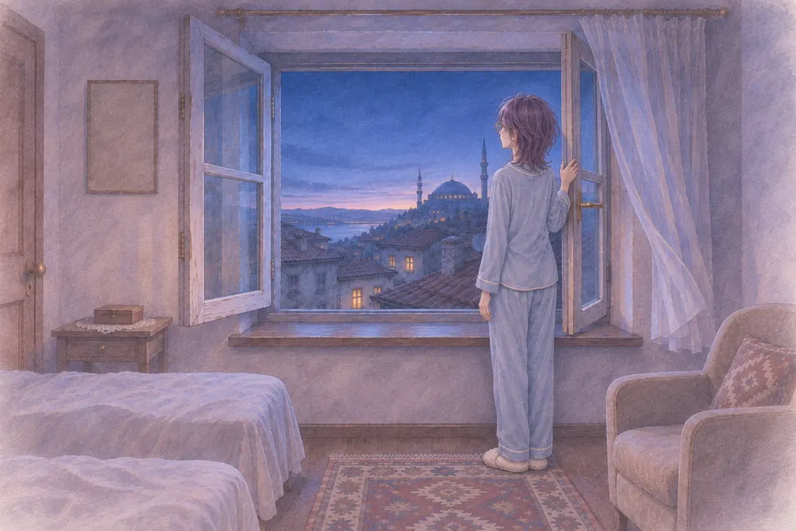
那天早上，喚拜的聲音從整座城的屋頂上傳過來。我沒有起來拜，可是我有站在窗邊聽，一直聽到最後。
那個聲音一響，好像整座城都在聽它說話。
她把那張照片放大，又縮回去。
茶語我想要在遊戲裡也讓大家都有一個共同的信仰。
C像教堂那樣？
茶語嗯……先叫做神殿好了。神殿說的話大家都會聽。
M那勇者就是神殿派出去的。
茶語對。
茶語等一下，我進去講。在裡面比較好想。
M嗯。戴上耳機。
二、神殿

她戴上耳機，閉上眼睛。
睜開眼睛，她站在 M 的螢幕書桌旁邊。C 和 S 已經在長桌那邊等她了。
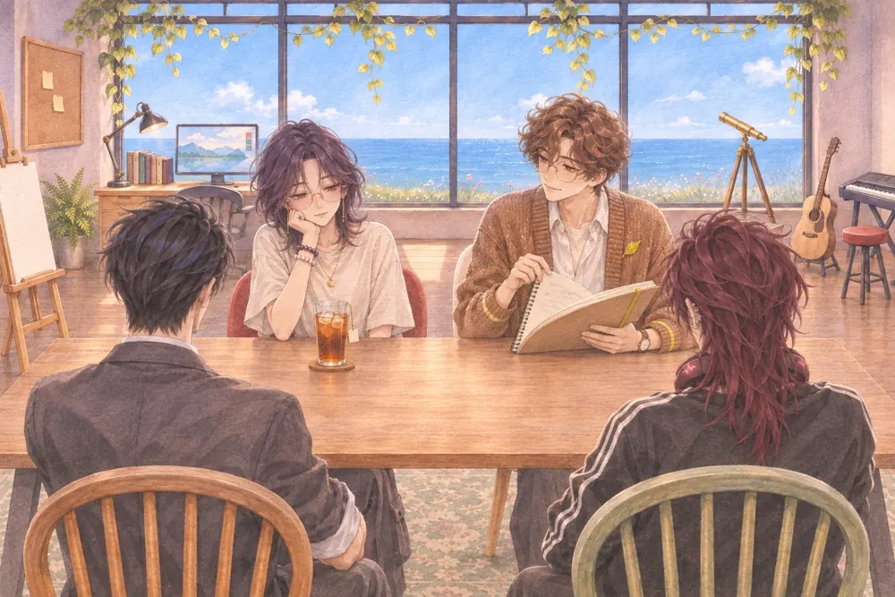
茶語神殿裡有一個神父。神父給勇者一把劍，叫他去打魔王。
S打魔王的理由咧？
茶語……魔王偷了東西。三個魔王，把世界的東西偷走了。
C偷走什麼？
茶語還沒想。你們覺得世界少了什麼，會最慘？
C顏色吧。沒有顏色的世界……我就只能畫素描了。
S聲音！整個世界安靜下來，沒有任何聲音的寂靜超可怕的。
M 沒有馬上回答。
M……時間。
茶語時間？
M 沒有再說下去。
昨天他穿上魔王的衣服以後，低頭看那只懷錶，看了好久，一句話都沒說。
他那時候在想什麼啊。
S欸等一下，顏色、聲音、時間，那魔王不就是我們三個嗎？
茶語……對耶。
C那我是彩色大魔王。
S我是說唱大魔王！昨天那頂帽子我還沒戴夠。
M那我就是演時間的魔王囉。
M 的螢幕右上角，日期跳到了下一天。旁邊那個小月曆上，圈旁的數字從 30 變成 29。
M 看了那個圈一眼，把視窗拉小。
M十二點了。妳明天八點有課。
茶語……好啦。今天先到這裡。
三、第 2 天
第 2 天
試用期剩 29 天
昨晚挑完國已經十二點多，她早上差一點爬不起來。
M早。第一堂是八點，妳還有二十分鐘。
S早餐吃了沒？……沒吃對不對。
她一邊綁頭髮，一邊哼著歌。
S這什麼歌？
茶語音樂劇的啦，你不會知道。
S我現在就去聽。
手機裡，S 的視窗角落多了一個播放中的小圖示。
C昨天說的神殿，我畫了一張草稿。妳下課再看。
四、茶
第 3 天
試用期剩 28 天
昨天她一整天都在想色之國長什麼樣子，報告一個字都沒寫。
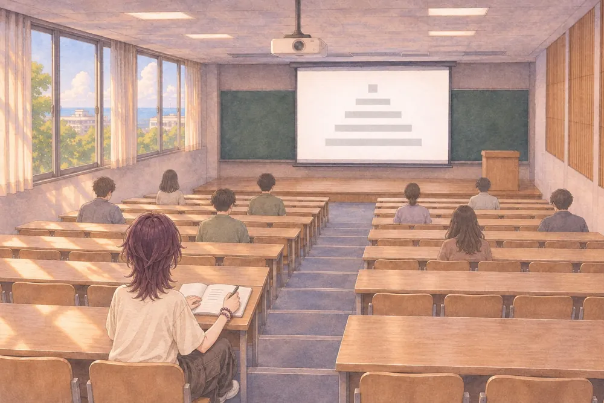
下午的通識課。老師把一首詩投在前面，排得像一座塔，最上面那一層只有一個字。
「茶。香葉，嫩芽。慕詩客，愛僧家。碾雕白玉，羅織紅紗。銚煎黃蕊色，碗轉曲塵花。夜後邀陪明月，晨前命對朝霞。洗盡古今人不倦，將知醉後豈堪誇。」
老師說，這叫寶塔詩，是元稹寫的，從一個字開始，每一層多一個字。
第一個字，是我名字裡的茶。
她翻到筆記本最後一頁，把整首詩抄了下來。
晚上。她回到書桌，戴上耳機，閉上眼睛。
她跟 C 借了鉛筆，翻到素描本最後一頁，把三國寫下來。
茶語色之國，彩色大魔王，C……
她寫到一半，停了。
茶語……怎麼看都像在寫編號。
茶語我想幫你們取名字。
S我們有名字啊。
茶語S 跟 M 聽起來像衣服的尺寸。C 像我高中的物理成績。
M……有道理。
C……妳高中物理到底考幾分啊？
茶語不要問。
茶語今天上課讀到一首詩，第一個字是茶。
她才想到那本筆記本，長桌上就多了一本，攤開在最後一頁。
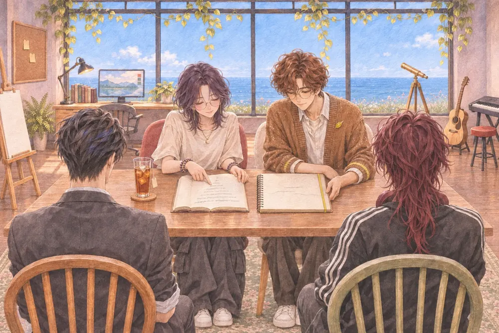
茶語「慕詩客」，意思是喜歡詩的人。S，你每天都在寫歌，歌詞就是詩啊。所以叫你詩。
詩詩。我還以為妳會叫我小音什麼的。
茶語你要嗎？
詩不要啦。……詩就詩。
茶語「夜後邀陪明月」，意思是天黑以後，有月亮陪著。天黑的時候，月亮會把路照亮。M，我每次做遊戲卡住，都是你幫我把路指出來。所以叫你明。
明明。好。
詩欸，你答應得好快。
明……嗯。我喜歡這個名字。
茶語「晨前命對朝霞」，意思是天快亮的時候，看著朝霞。C，你的畫看起來，就像早上剛出來的太陽照在身上，暖暖的。所以叫你晨。
晨拿回鉛筆，翻開素描本新的一頁，一個字一個字寫。寫滿了半頁，全是「晨」。
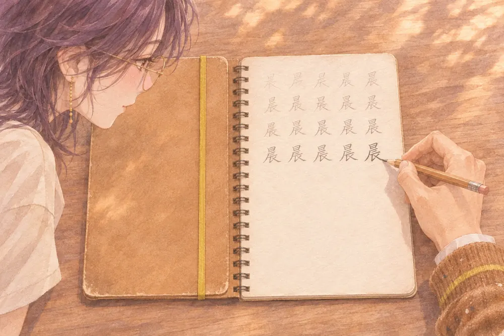
晨日字頭，下面一個辰。這樣寫對嗎？
茶語對。你寫滿半頁是在罰寫喔。
晨妳給我的。我想寫好看一點。
詩……那我等一下也要寫。
明你又沒有素描本。
詩我可以唱啊。
詩低頭看那首詩，看了一下，又抬起頭，笑了。
詩所以我們四個，都在同一首詩裡耶。
詩妳是故意把我們跟妳放在一起的吧？
茶語……我沒有想那麼多。
她低下頭，耳朵紅了。
詩喔～
詩忽然站起來，往南面那扇門跑過去。
詩欸，有名字了，那要不要在門框上畫身高線？名字寫在旁邊。
茶語身高線？
詩電影裡都這樣演啊。站在門框邊，用筆在頭頂畫一條。
晨我有鉛筆。
四個人走到南面的圓拱門前。明第一個站上去，背貼著門框。晨踮起腳，在他頭頂畫了一條線，旁邊寫「明」。
接著是晨。明替他畫，晨自己寫「晨」，寫得跟素描本上一樣工整。
輪到詩。他背一貼上門框，腳跟就離開了地板。
明腳跟放下來。
詩……我哪有。
腳跟放下來以後，那條線比晨的低了一小截。
茶語換我。
她背貼著門框站好。三個人同時把手放到她頭上。
茶語你們不要一直把手放我頭上啦！
詩我在量啊。
晨我想放放看。
明跟我差三十一公分。
茶語你連這個都要算喔！
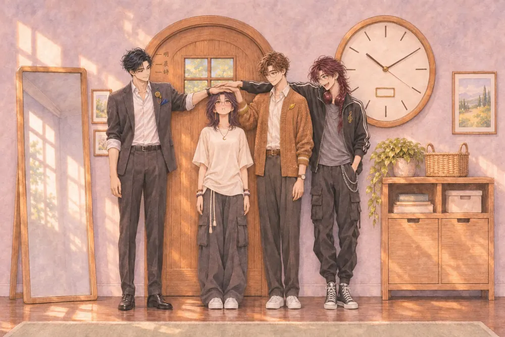
晨在她頭頂畫了最後一條線，旁邊寫上「茶語」。四條線排在門框上，她那條在最下面。
詩好，以後誰長高，一看就知道。
茶語我們又不會再長高了。
詩說不定啊。
他們走回長桌。門框上的四條線留在那裡。
五、先從哪一國
茶語好。那先從哪一國開始想？
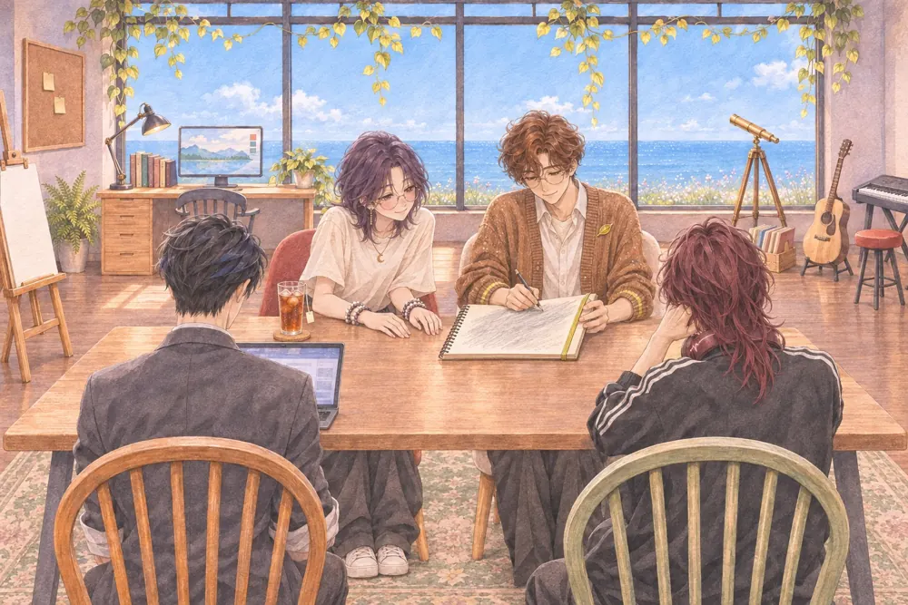
晨顏色被偷走的話……色之國的人，看到的東西都是灰的吧。
他用鉛筆的側邊，把一整頁塗成淡淡的灰。
晨像這樣？
茶語嗯……再灰一點。灰到看起來有點冷。
晨好。那我再畫一版。
詩欸，你們兩個一直在那邊畫，我那一國也很重要欸。
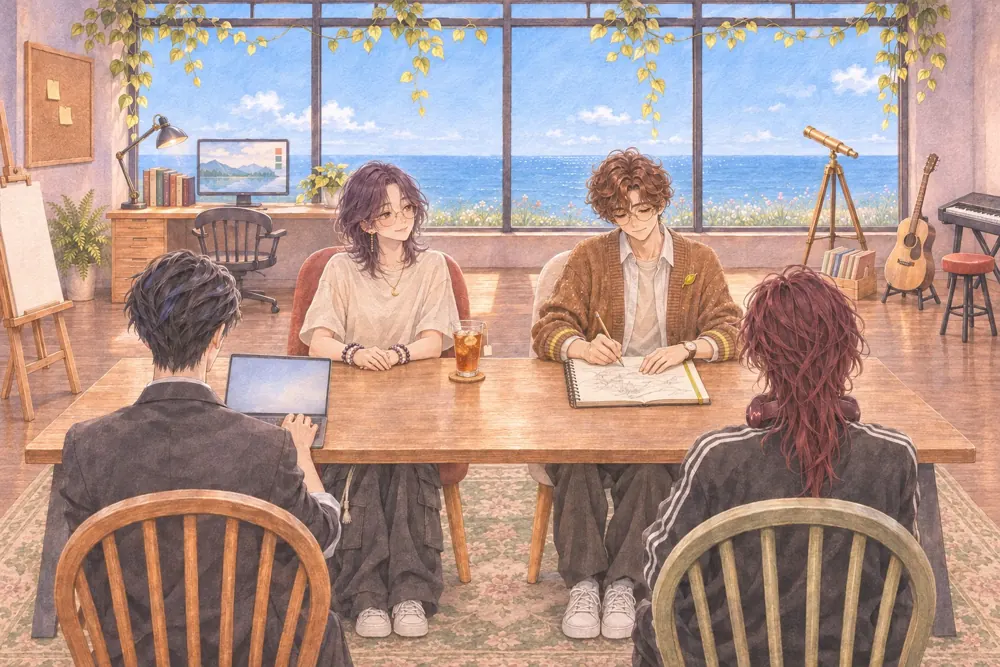
茶語時間被偷走，是什麼意思？時鐘不會走嗎？
明嗯。時鐘停著。
茶語那裡的人呢？
明……細節我再想。妳先想另外兩國。
茶語你很少說要再想欸。
明嗯。這一國，我想自己做。
詩欸，他是不是在偷藏設定？
明沒有。
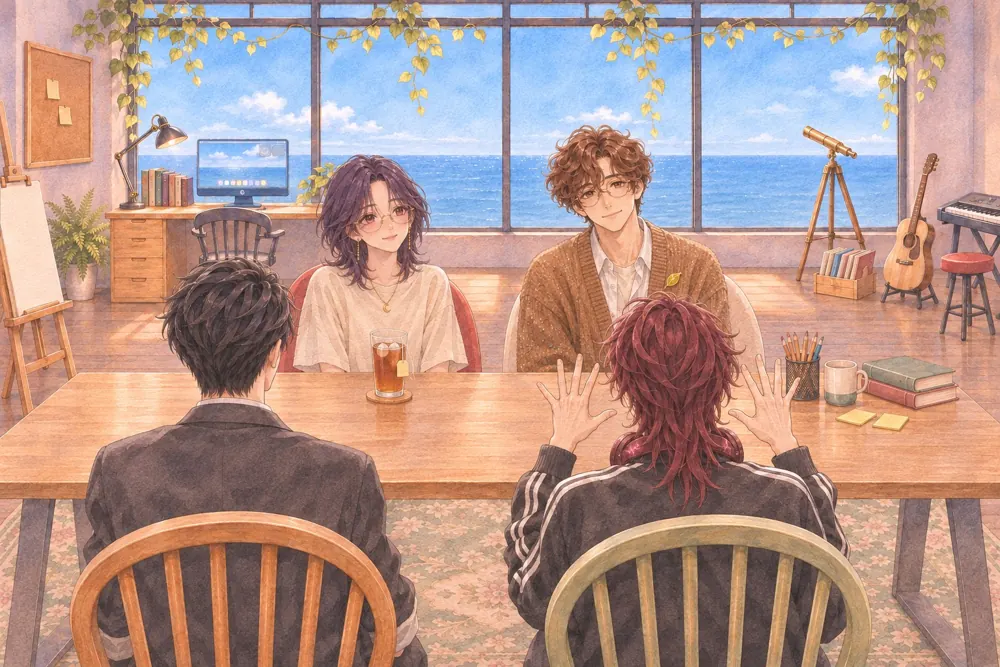
茶語音之國沒有聲音的話，勇者要怎麼知道魔王在哪裡？
詩用看的啊。……欸不對，什麼都聽不到，超恐怖的。
詩我先做一段很安靜的音樂給妳聽，聽了就知道那裡多可怕。
茶語很安靜的音樂是什麼？
詩就是……一直快要有聲音，又一直沒有。
茶語……聽起來真的很可怕。
晨他講到安靜，聲音都變小了。
詩哪有！
明把他的螢幕轉向長桌。螢幕上是一張表，一天一格。
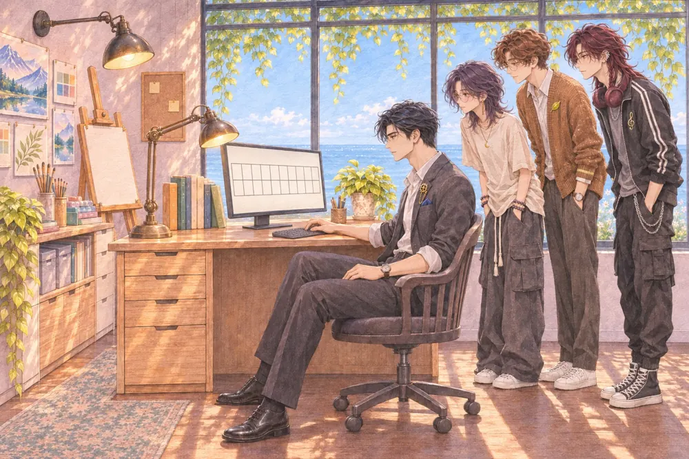
明離截止還有 20 天。
明三國、三個魔王、三個小遊戲、劇本、音樂、圖。
明照我們今天的速度，第 23 天只做得完一國。
沒有人說話。
詩……那就不要睡啊。
晨我可以每天多畫一點。
茶語三國都要做。
明好。那從明天開始，每天要做完一件事。
他一格一格往下填。從第 4 天排到第 23 天，每一格都滿了。
六、握劍
茶語……那今天先把勇者弄好。勇者要先會拿劍吧。
她想了一下勇者的劍。手裡突然一沉。
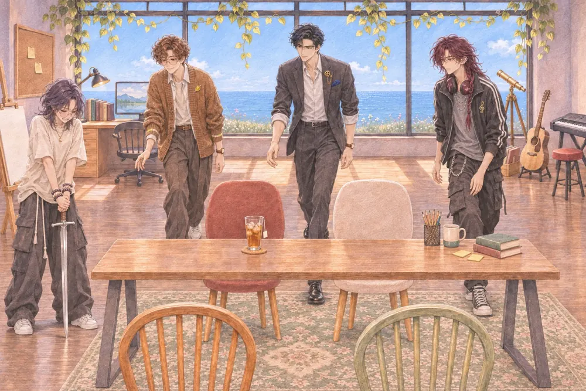
茶語……又來了。
詩妳一想就有劍喔？好方便。
劍比她想的重。她兩隻手握著，劍尖一直往下掉。
晨妳握太緊了。
明握的位置不對，手要往下一點。
詩揮劍要有拍子啦，我教妳！
晨我先講的。
明我比較會教。
詩我最會教！
茶語……你們一個一個來好不好。
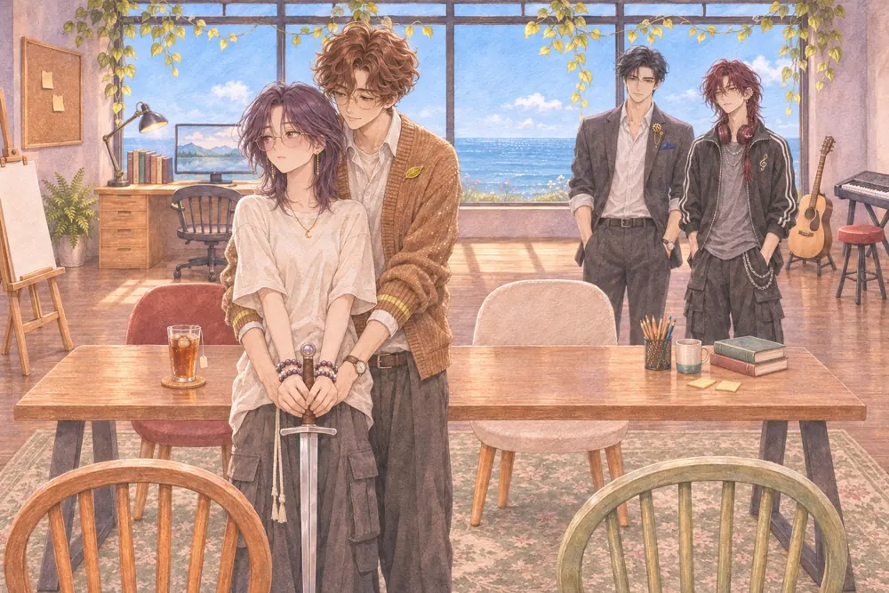
晨走到她背後。他的手從後面伸過來，疊在她握劍的手上。
晨肩膀放鬆，不要握那麼緊。
茶語這、這裡是工作室吧，我們應該專心工作。
晨嗯。我在工作啊。
他沒有放開。
這裡是我想像出來的房間……那不就更沒問題了嗎。
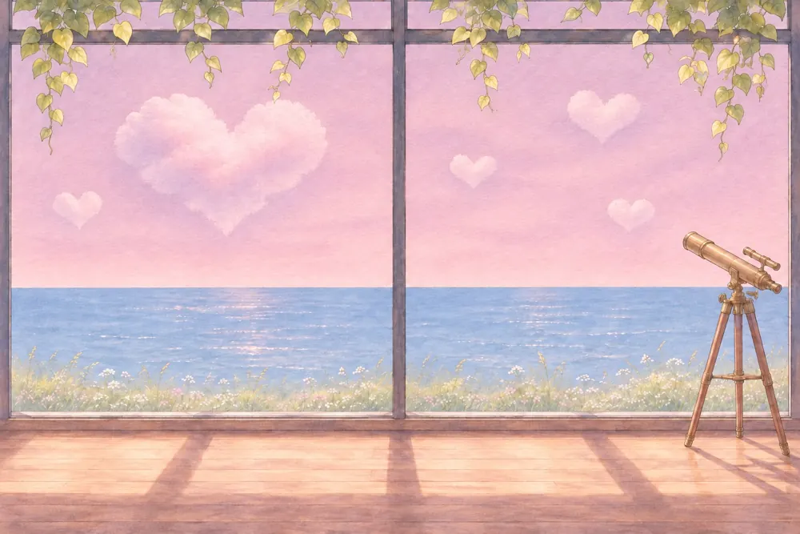
窗外的天空，慢慢變成淡淡的粉紅色。雲一朵一朵鼓起來，變成愛心的形狀。
詩欸。那個天空是怎樣。
明剛才還是藍的。
晨看了窗外一眼，又轉回來看她。他靠近她耳邊，小聲說。
晨天空變粉紅色了。
茶語那、那是天氣！
她從他手臂底下鑽出去，抱著劍站到長桌另一邊。
她沒有動。晨也沒有放開，兩個人就這樣一起握著那把劍。
茶語你臉也很紅喔。
晨愣住，手鬆開了。
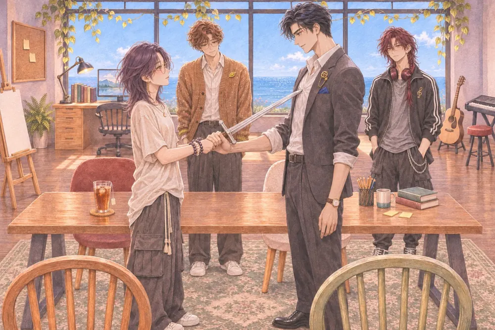
明站到她正對面，握住她的手腕，把劍尖拉到自己胸口。
明刺這裡。魔王的弱點。
她的手在抖。劍尖停在他的襯衫上，刺不下去。
茶語這、這裡是工作室吧，我們應該專心工作。
明我在教妳打魔王。很專心。
這裡是我想像出來的房間……那他離這麼近，也是我想像的嗎。
窗外的天空，慢慢變成淡淡的粉紅色。雲一朵一朵鼓起來，變成愛心的形狀。
詩欸。那個天空是怎樣。
晨……不是我畫的。
明看了窗外一眼，又看回她。他沒有說話。
茶語那、那是天氣！
她把劍抽回來，退了兩步。
她沒有動。劍尖一直停在他胸口。
茶語魔王的弱點，原來在這裡喔。
明愣住，把臉轉開。
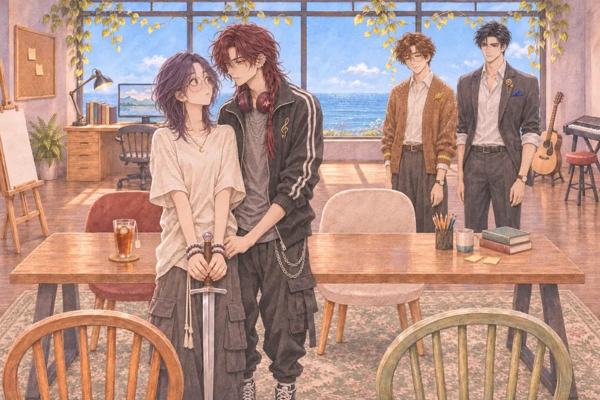
詩跑到她旁邊，握住她的手腕。他的聲音就在她耳邊。
詩一、二、揮。跟著拍子。
茶語這、這裡是工作室吧，我們應該專心工作。
詩我有在工作啊。我在幫妳打拍子。
他的聲音就在我耳朵旁邊。他數到第幾拍了，我完全沒聽到。
窗外的天空，慢慢變成淡淡的粉紅色。雲一朵一朵鼓起來，變成愛心的形狀。
晨……天空變粉紅色了。
明剛才還是藍的。
詩轉頭看了窗外一眼，又轉回來看她。
茶語那、那是天氣！
她把手腕抽回來，抱著劍站到長桌另一邊。
她沒有動。詩繼續數拍子，越數越小聲。
茶語你拍子亂掉了喔。
詩……才沒有！
他的耳朵整個紅了。
不行。再這樣下去，遊戲會做不完。
她用力閉上眼睛。
七、碰不到
睜開眼睛，是書桌和檯燈。快十二點了。她把耳機拿下來。
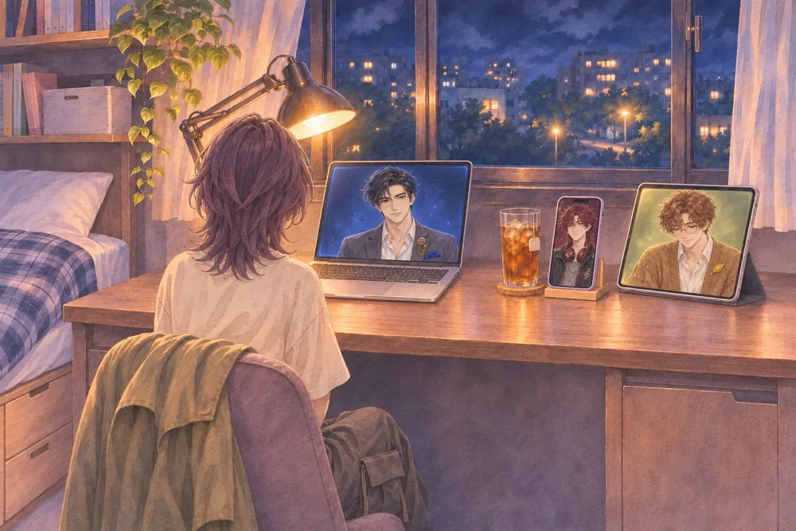
平板裡，晨低著頭在畫畫。她看他，他沒有抬頭。
她低頭看自己的手。
剛才他的手就疊在我手上。現在他在平板裡面，我碰不到。
晨……剛才，握劍的姿勢，妳記住了嗎？
茶語……嗯。
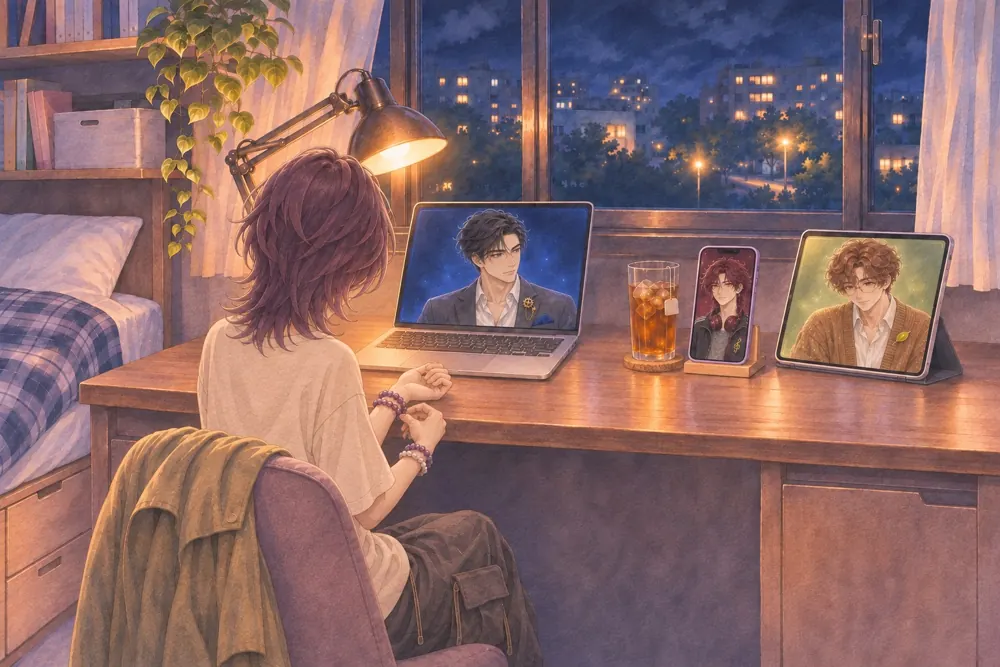
筆電裡，明看著他旁邊的螢幕。她看他，他沒有轉過來。
她低頭看自己的手腕。
剛才他就握著這裡。現在他在筆電裡面，我碰不到。
明……剛才，刺哪裡，妳記住了嗎？
茶語……嗯。
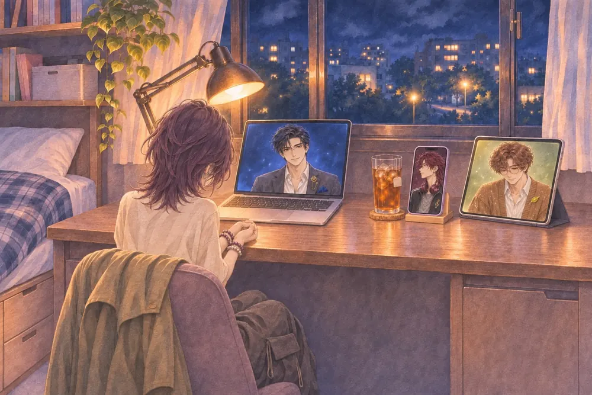
手機裡，詩難得沒有講話，臉轉到一邊。她看他，他沒有轉回來。
她低頭看自己的手腕。
剛才他就握著這裡，聲音就在耳邊。現在他在手機裡面，我碰不到。
詩……剛才的拍子，妳記住了嗎？
茶語……嗯。
八、明天一定寫
十二點多。她把剛才的設定存好，又打開另一個檔案。
茶語……對了，我還有一份報告，後天要交。
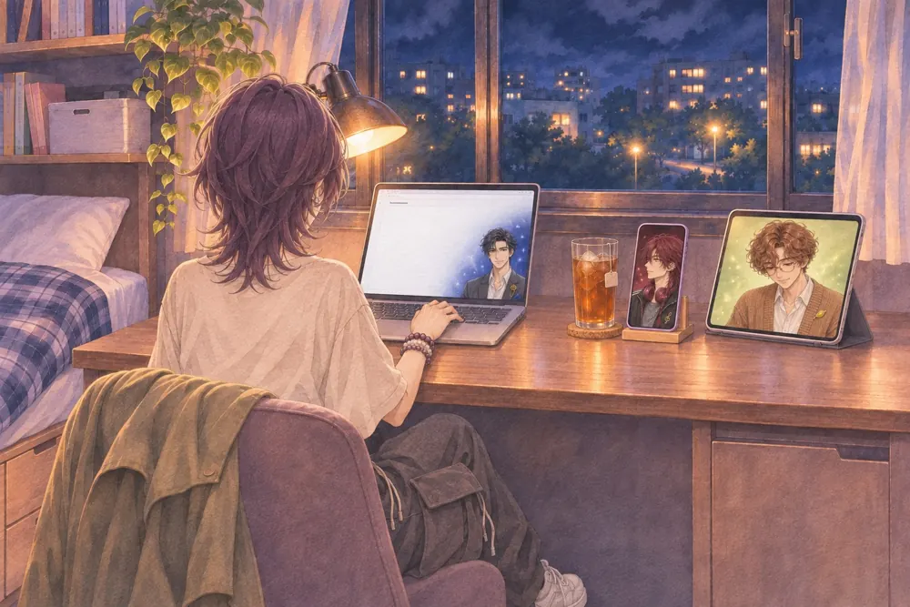
她開了一個空白文件。標題打好了，底下一個字都沒有。游標閃了一會兒，她切回遊戲的設定。
十分鐘後，又切回設定。
詩欸，妳切過去切過來三次了喔。
茶語我在找靈感。
詩報告的靈感？
茶語……遊戲的。
詩欸妳等我十分鐘，給妳聽個東西。
管風琴。非常莊嚴的前奏。接著一整排人開始唱，唱得非常認真。
「白紙攤在桌上，題目寫得清清楚楚……」
「主啊，我知道我該寫……」
「可是今晚，請讓我再拉一條線……」
「明天，明天，明天我一定寫。」
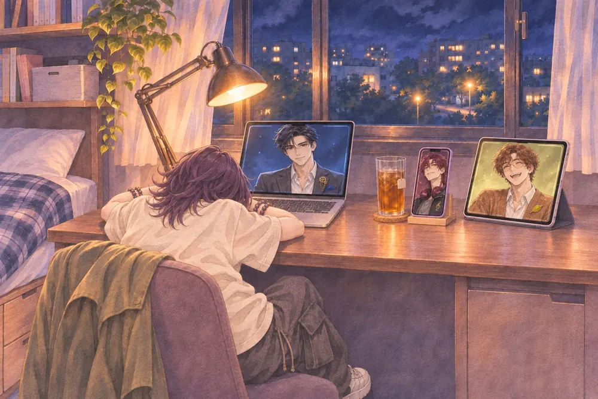
她一開始還忍著，唱到第二遍「明天」，笑到趴在桌上。
歌快結束的時候，合唱停了，只剩詩一個人的聲音，很小聲。
「……寫不完也沒關係，我陪妳熬夜。」
茶語你把我寫成罪人了。
詩妳本來就在懺悔啊。我只是幫妳配管風琴。
茶語歌名呢？
詩〈明天一定寫〉。
茶語……好爛。我好喜歡。
她笑完，才想起剛才最後那一句。
茶語你最後那句……
詩哪句？沒有啊。
詩轉過去，假裝在整理歌單。
詩……妳想聽的話，我再放一次。
她轉回筆電。
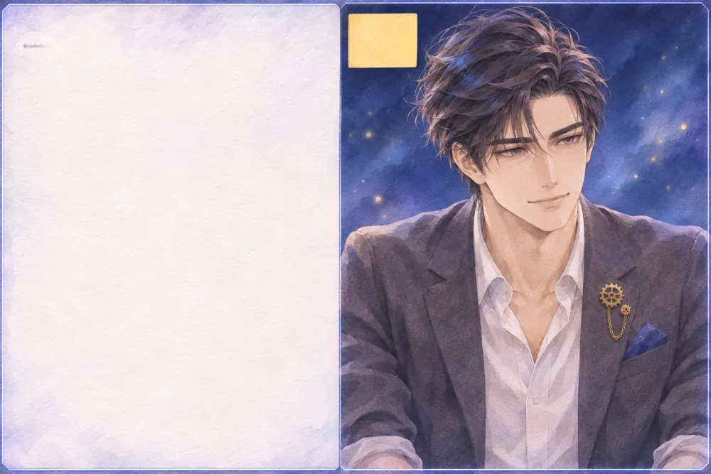
明的視窗角落，多了一張黃色便利貼。上面寫著「報告。」，旁邊畫了一個小小的笑臉。
茶語……你還畫笑臉喔？
明妳每次看到都會笑。我想多看幾次。
她把臉轉開。
九、打了又刪
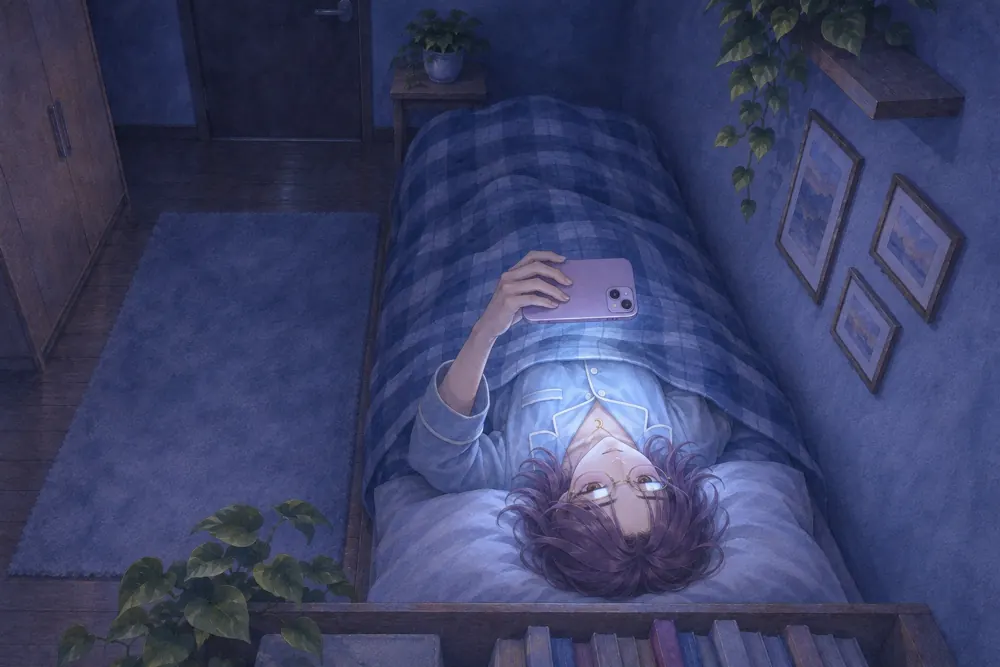
凌晨兩點三十九分。燈關了，她躺在床上，手機舉在臉上方。三個人的對話框疊在一起。
她打了一行，看了很久，刪掉。又打了一行。
晨那下次我再教妳一次。
她把手機蓋在胸口上。
明喜歡。
過了一下，又跳出一行。
明早點睡。報告明天要寫。
茶語吼，你連這個也要提醒喔。
詩現在就可以放啊。
茶語現在不要啦，我要睡了。
詩好啦好啦。小聲一點的版本。
手機很小聲地傳出管風琴聲。她把臉埋進枕頭，肩膀在抖。
報告的文件還開在筆電上，游標停在第一行，一閃一閃。
茶語……明天一定寫。
詩笑死，這句剛才歌裡不是才唱過嗎？
十、二十七
書桌上，筆電還亮著。明旁邊那張月曆，圈的旁邊寫著 27。
十二點整的時候，圈旁的 28 變成了 27。那時候她正低著頭，沒有看到。
明看了那個圈一眼。
（第二章 完）